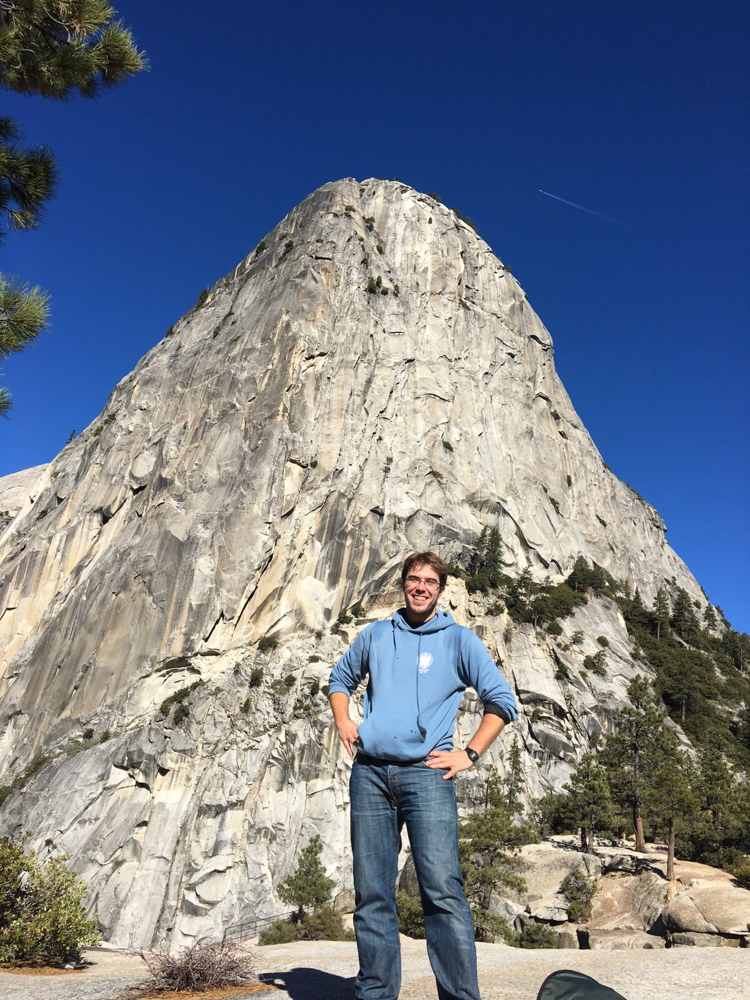

Probabilistic Machine Learning
Efficient inference methods, uncertainty quantification and kernel methods.
Probabilistic Machine Learning · Generative AI · Personalised Medicine
Full Professor (Catedrático de Universidad) at the Department of Signal Theory and Communications, Universidad Carlos III de Madrid, and member of the Signal Processing Group (GTS).

Research interests
Efficient inference methods, uncertainty quantification and kernel methods.
Generative modelling, latent-variable models and calibrated neural networks.
Applications in personalised medicine, omics, computational psychiatry and medical imaging.
Latest news
Revisiting Nonstationary Kernel Design for Multi-Output Gaussian Processes. Qiaochu Xu, Zi Yang, Ying Li, Michael Minyi Zhang, Pablo M. Olmos.
A Probabilistic Hard Concept Bottleneck for Steerable Generative Models. María Martínez-García, Ricardo Vazquez Alvarez, Alejandro Lancho, Pablo M. Olmos, Isabel Valera.
Explicit Density Approximation for Neural Implicit Samplers Using a Bernstein-Based Convex Divergence. José Manuel de Frutos, Pablo M. Olmos, Manuel A. Vázquez, Joaquín Míguez.
Multi-View Oriented GPLVM: Expressiveness and Efficiency. Zi Yang, Ying Li, Zhidi Lin, Michael Minyi Zhang, Pablo M. Olmos.
The Marie Skłodowska-Curie Doctoral Network Machine Learning Computational Advancements for peRsonalized mEdicine (MLCARE) has been granted. I am honoured to serve as project coordinator.
My project “THAI: Towards Humble and Discoverable AI” was awarded a grant by the FBBVA Leonardo Program.
Research group
Contact
Universidad Carlos III de Madrid, Department of Signal Theory and Communications, Avenida de la Universidad 30, 28911 Leganés, Spain.
Office: 4.2.A.08 · Phone: +34 916 248 875 · Email: pamartin@ing.uc3m.es